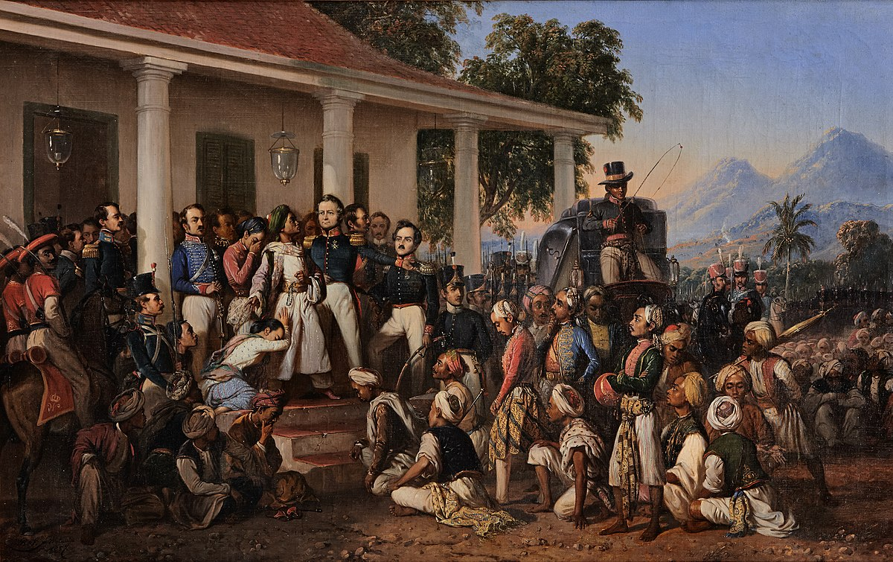

Penangkapan Diponegoro
The Arrest of Prince Diponegoro is an 1857 painting by Raden Saleh, which depicts the capture of Prince Diponegoro by Lieutenant General Hendrik Merkus de Kock on March 28, 1830. In the two artists' painting, Diponegoro is standing next to de Kock on the steps of a colonial house, surrounded by Dutch officers. and a stripped Javanese. Saleh painted the painting in 1856-1857, after which he personally presented it to King Willem III of the Netherlands. In 1978, the painting was donated to the government of an independent Indonesia, after which it was exhibited at the Indonesian National Museum and the Presidential Palace in Jakarta.
As the painting was in such a bad condition, it was completely restored in 2013. Now it is part of the collection of the Presidential Museum.
